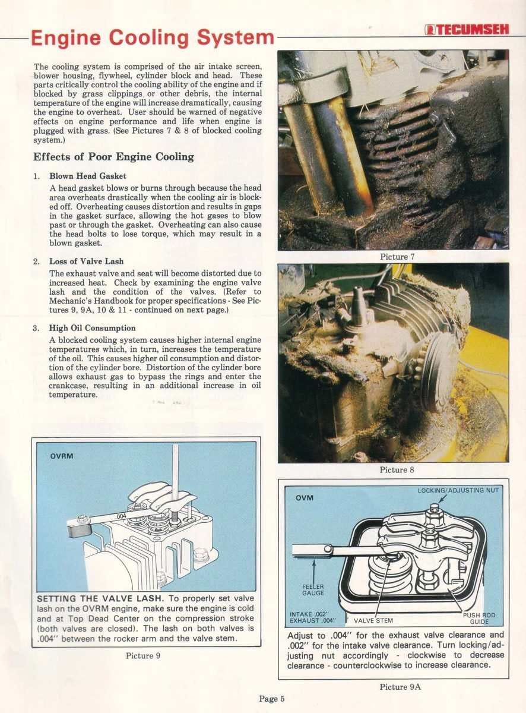
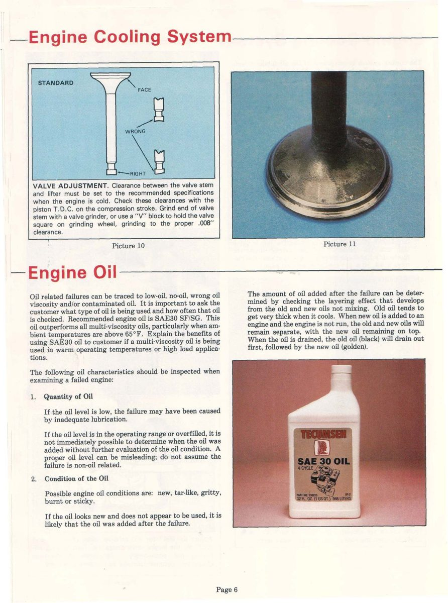

When an engine has seized, lost compression or worn out early, new parts alone will not stop it happening again. The damage on the old parts usually shows the cause: dirt getting in, overheating, a lean mixture, or a lack of oil. Look and record before you clean anything, because cleaning removes the evidence. The photos come from small four-stroke engines, but the same signs appear on motorcycle engines.
Safety
- Drain oil and fuel only when the engine is cool. Keep fuel away from flames.
- Wear gloves: used oil irritates skin.
You need
- A clean pan and a clear jar for the old oil, a torch and a magnifier, a notebook and a camera.
Steps
- Ask about the history first. What oil was used and when was it last added or changed? Was the bike ridden in dust or with a missing or damaged air filter? Was any work done just before it failed (new jets, new filter, exhaust change)?
- Look at the outside before stripping. Cooling fins packed with mud, grass or oil and dirt make an air-cooled engine overheat. On a liquid-cooled engine, check the radiator and coolant. See Check air cooling.
- Check the air filter and its seals. A torn, missing or badly seated filter, or a split intake rubber, lets dirt into the engine. Look for dust on the clean side of the filter and inside the intake.
- Check the carburettor settings. On an adjustable carburettor, note where the mixture screws are set. A lean mixture makes the engine run hotter.
- Drain and inspect the oil into a clear jar: Inspect drained oil for clues. - Very low oil: the failure may be from lack of lubrication. - Oil that looks new after a failure: it was probably added after the engine failed, so the level does not prove there was enough oil before. - Old oil and new oil do not mix at once in an engine that has not run. If the first oil out is dark and the last is clean and golden, oil was topped up recently. - Gritty oil means dirt got in. Thick, tar-like or burnt-smelling oil means overheating or long overdue changes.
- Read the cylinder and piston. Fine vertical scratches all round the bore and a dull, scratched piston skirt mean dirt wear. Smeared metal or scuffed patches on one side mean overheating or lack of oil. See Inspect a piston and read its size marks.
- Read the rings and valves. Worn rings and high oil use go with dirt wear. Worn valve stems and guides also point to dirt drawn in through the intake. A burnt, pitted or distorted exhaust valve face points to overheating, a lean mixture or valve clearance that closed up.
- Read the head gasket. A blown or burnt-through gasket points to overheating or head bolts that lost their tightness.
- Read the bearings. Highly polished, worn crank journals and big end mean dirt in the oil. A worn big end will in time knock and break.
- Write a short list of what you found and the likely cause. Fix the cause (filter, intake, cooling, mixture, oil level, oil grade) as part of the rebuild.
Check your work
- You can name one main cause and the evidence for it before you order parts.
- The cause is on the job list, not only the worn parts.
If it did not fix the problem
- Engine locked: Find out where a stuck engine is locked.
- Measuring the wear: Measure piston-to-cylinder clearance and bore wear.
- Dirt wear found: Engine wears out early after dirt gets past the air filter.
- Smoke after a rebuild: Engine still smokes after a rebuild with new rings.